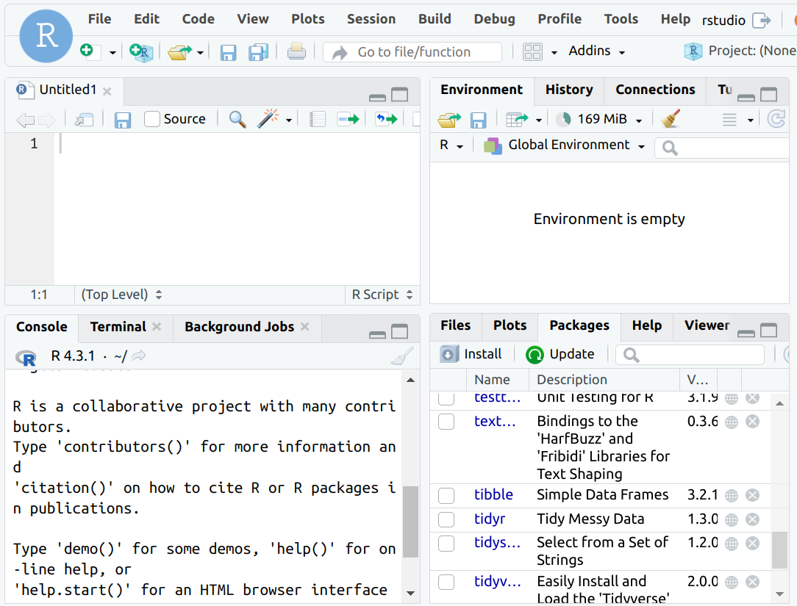
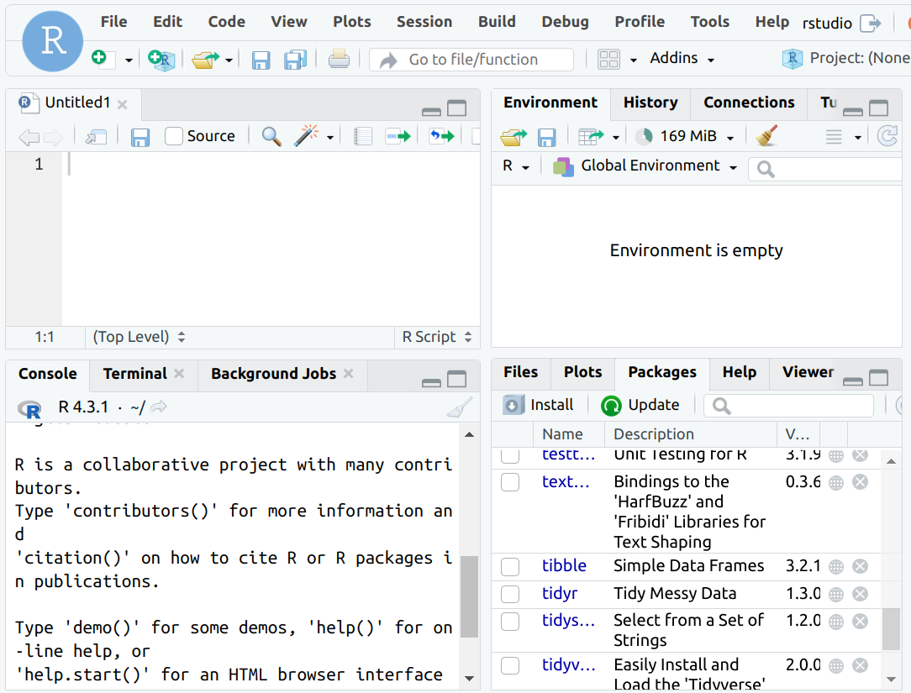
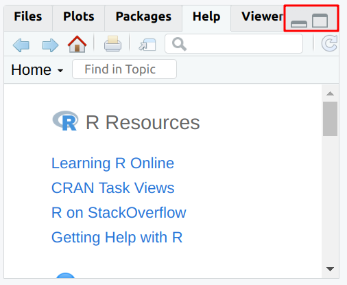
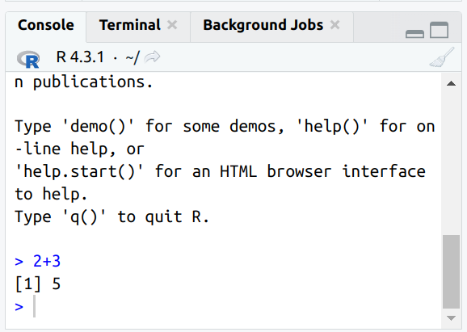
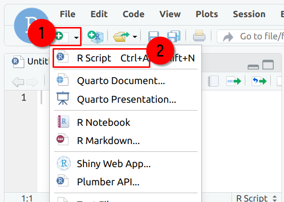
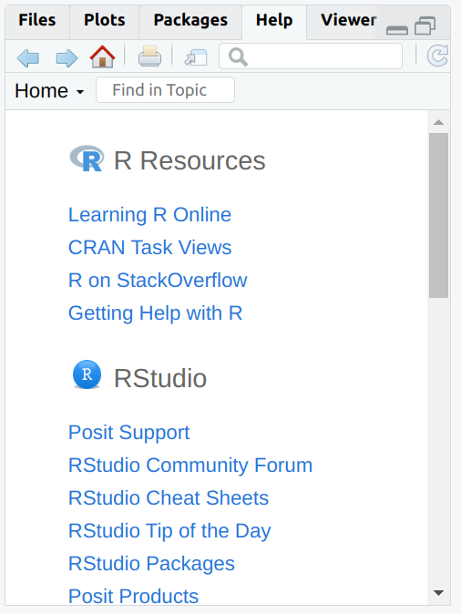
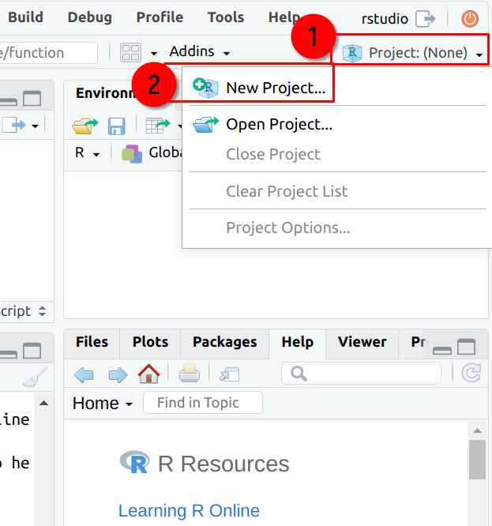

knitr::include_graphics("images/rstudio_panes.png")
RStudio is an IDE (Integrated development environment) for the R programming language made by a company called Posit. You can install RStudio by visiting this link1. Posit, also develops Shiny, a package to create full-fledged web-apps. I am not going to cover Shiny in this book, since there’s already a lot2 of material that you can learn from.
Once you have installed RStudio, launch it and let’s go through the interface together.
RStudio is divided into different panes. Each pane has a specific function. The image below shows some of these panes:
knitr::include_graphics("images/rstudio_panes.png")
Take some time to look around what each pane shows you. Some panes are empty; for example the Plots pane or the Viewer pane. Plots shows you the plots you make. You can browse the plots and save them. We will see this in more detail in a later chapter. Viewer shows you previews of documents that you generate with R. More on this later. You can also minimize and maximize the panes by clicking these two buttons:
knitr::include_graphics("images/rstudio_panes_min_max.png")
The Console pane is where you can execute R code. Write the following in the console:
2 + 3and you’ll get the answer, 5. However, do not write a lot of lines in the console. It is better write your code inside a script. Output is also shown inside the console.
knitr::include_graphics("images/rstudio_console.png")
Instead of writing code in the console, it is better to write code in a so-called script. Scripts are simple text files that can be written and executed by RStudio. To write a new script, click on the top-right icon and select “R script”:
knitr::include_graphics("images/rstudio_new_script.png")
In Figure 3.4, we see the user creating a new R script. If you have a background in the social sciences you might be familiar with STATA: STATA also uses scripts, colloquially called .do files. The C programming language uses .c files. R scripts have the .r or .R extension. But .R files are not the only type of files that you can edit with RStudio. We will explore other formats later in the book.
The Help pane allows you to consult documentation for R, its packages etc:
knitr::include_graphics("images/rstudio_help.png")
You can also read the help file of a specific function by writing ?function in the console, where function is the function you want to know about.
I highly recommend you take some time to check out the “CRAN Task Views”. These views provide a very nice summary of the different packages available for different scientific fields. For example, if you’re doing econometrics, you should read the CRAN Task View: Econometrics3.
Take some time to browse the different CRAN Task Views here4.
The Environment pane shows every object created in the current section. It is especially useful if you have defined lists or have loaded data into R as it makes it easy to explore these more complex objects. As you will write code and create objects throughout a session, the environment pane will get more and more populated.
One of the best features of RStudio are projects. Creating a project is simple; simply click on the top right corner of RStudio and then “New Project”:
knitr::include_graphics("images/rstudio_new_project.png")
Projects make a lot of things easier, such as managing paths (more on this in the chapter about reading data). Another useful feature of projects is that the scripts you open in project A will stay open even if you switch to another project B, and then switch back to the project A again.
You can also use version control (with Git) inside a project. Version control is very useful, but I won’t discuss it in this book.